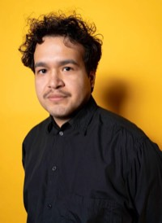

NBC News
61 people whose festival biography mentions NBC News. A mention can mean a job, a past job, a grant, a broadcast or an award: read the bio for which.
 Nina AlvarezPanelist · 3 editions, 2021–2026
Nina AlvarezPanelist · 3 editions, 2021–2026 Judith MatloffPanelist, workshop leader · 3 editions, 2017–2024Columbia Graduate School of Journalism
Judith MatloffPanelist, workshop leader · 3 editions, 2017–2024Columbia Graduate School of Journalism Michael RezendesPanelist, moderator, workshop leader · 3 editions, 2015–2023
Michael RezendesPanelist, moderator, workshop leader · 3 editions, 2015–2023- Laura BlumenfeldModerator · 2 editions, 2018–2024


- Lauren SelmanFestival team · 2 editions, 2015–2016
 Gaia de SimoniPanelist, filmmaker · 2 editions, 2024–2025
Gaia de SimoniPanelist, filmmaker · 2 editions, 2024–2025- Joel Stonington2 editions, 2018–2019
 Traci A. Curry (co-)Filmmaker, panelist · 2021
Traci A. Curry (co-)Filmmaker, panelist · 2021 Lynne AdrineModerator · 2024
Lynne AdrineModerator · 2024 Tetiana Anderson2021
Tetiana Anderson2021 Lawrence BartleyPanelist · 2021
Lawrence BartleyPanelist · 2021
 Lynn D. CarrilloPanelist · 2021
Lynn D. CarrilloPanelist · 2021 Michael CascioPanelist · 2021
Michael CascioPanelist · 2021 Dan ChenPanelist · 2021
Dan ChenPanelist · 2021 Costas ChristPanelist, journalists behind the film · 2025
Costas ChristPanelist, journalists behind the film · 2025 Carol DysingerFilmmaker, panelist · 2023
Carol DysingerFilmmaker, panelist · 2023
 Mark GrahamPanelist · 2026
Mark GrahamPanelist · 2026 David E. GuggenheimModerator · 2025
David E. GuggenheimModerator · 2025 Nathan HalversonFilm subject, panelist · 2022
Nathan HalversonFilm subject, panelist · 2022
- Sally HaydenPanelist · 2019
 Brendan Hubbard2024
Brendan Hubbard2024- Brent HuffmanFilmmaker · 2022
 Kristi JacobsonFilmmaker, panelist · 2016
Kristi JacobsonFilmmaker, panelist · 2016
- Shola LynchWorkshop leader · 2018Schomburg Center for Research in Black Culture, The New York Public Library
- Robert MaguirePanelist · 2018

 Regan MertzFestival team · 2022
Regan MertzFestival team · 2022
JoeBill MuñozFilmmaker, panelist · 2024 Kelsey Nicole NelsonModerator · 2025
Kelsey Nicole NelsonModerator · 2025 Lynn OberlanderPanelist · 2021
Lynn OberlanderPanelist · 2021 Molly O’BrienPanelist · 2021
Molly O’BrienPanelist · 2021 Michael PremoFilmmaker, panelist · 2024
Michael PremoFilmmaker, panelist · 2024 Charles M. SennottPanelist · 2021
Charles M. SennottPanelist · 2021 Miriam ShorFilmmaker, panelist · 2026
Miriam ShorFilmmaker, panelist · 2026- Andalusia Knoll SoloffFilmmaker, panelist · 2019
 Kristal SotomayorPanelist · 2021
Kristal SotomayorPanelist · 2021- Brennan Vance2021
 Shaina WardPanelist · 2021
Shaina WardPanelist · 2021- Jill Wine-BanksFilm subject · 2018